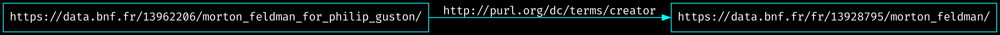

https://github.com/Amleth/communications/tree/main/out/2025.01.17_evry_hn

Corago in LOD - Seminar by Angelo Pompilio and Paolo Bonora, Digital Humanities and Digital Knowledge, Università di Bologna, 2017.

Opinion : En dépit du nombre de classes centrées sur les usages de musées, le CIDOC-CRM propose des classes génériques permettant de rendre compte de l’ensemble des problématiques de modélisation de la structure et du contenu des sources, ainsi que des processus analytiques qui les prennent pour cible.


Recourir à un unique modèles dans les différents projets permet de ne concevoir, développer et maintenir qu’une unique application pour présenter et exploiter les données.
Pas ou peu d’apport financier. Programme de recherche SHERLOCK à l’IReMus (Comment et pourquoi modéliser les données musicologiques avec le CIDOC CRM ? Comment les publier et les manipuler ?).